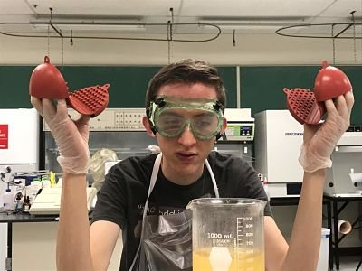

The scientific method is a series of steps that can be easily followed to find answers to questions and test different things. Whether you are determining the effects of sunlight on plants or the cause of a child's fear when their mother leaves, the scientific method can standardize and guide your research. The simplest way to understand the scientific method is to break it down into six steps.

Looking back at the example of plants and sunlight, let's determine what each step might look like. Our question would be, "What is the effect of sunlight on plants?" Next, we would form a hypothesis which is what we'll be testing. In order to understand the effects of sunlight on plants, we might take 2 plants of the same species and plant them in two of the same type of pots, but we'll change their environment. One plant and pot will be placed in a dark box on a window sill, while the other will be placed next to it but not in a box. Our hypothesis might be, "We think the plant outside of the box will grow taller, while the plant inside the box will grow less than the plant outside." We would then do what we planned with each plant and watch their progress. It's important to be consistent in measuring and recording the data. At the end of our experiment, we might find that the plant outside the box grew 4 inches over the month of the experiment while the plant inside the box grew 1 inch, and then died. We would conclude that plants with exposure to sunlight grow and live better and longer than plants that don't receive sunlight. We would then share our results with others who had the same question
To learn more about the scientific method, click here!
Page by Marissa Gardner. Last modified November 14, 2018